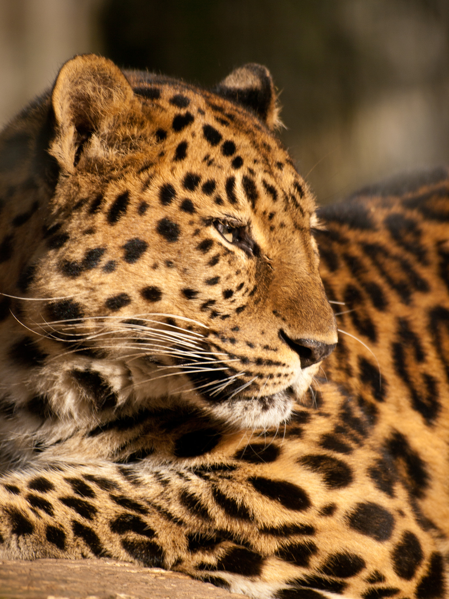
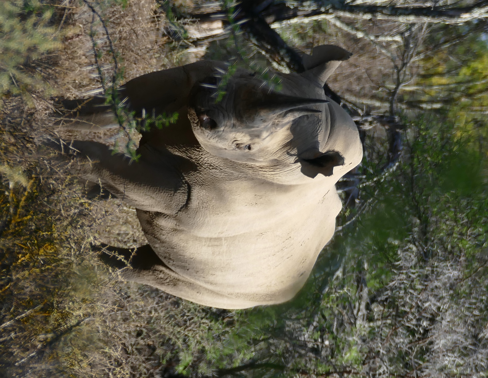
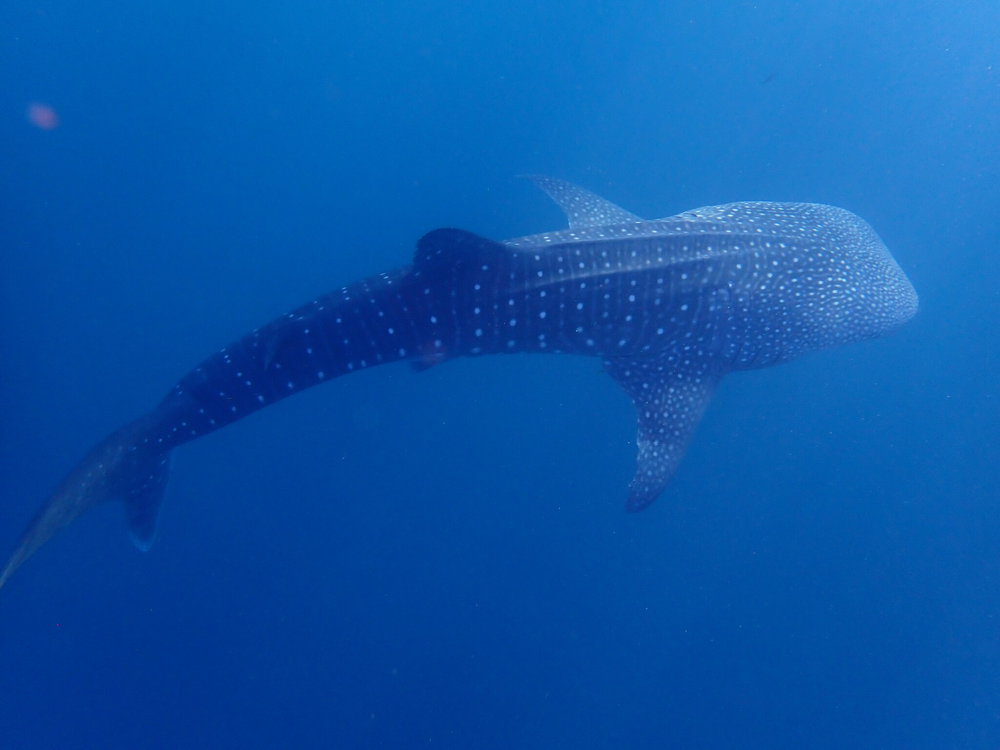

Highlighted Endangered Animals
Learn more about these amazing animals that are impacted by the changes in our environment.

Amur Leopard
Amur leopards are critically endangered animals that face threats related to prey scarcity and illegal poaching.
Learn More
Black Rhino
Black rhinos rely on large territories for their survival, which is why many other species benefit when they are protected.
Learn More
Whale Shark
Whale sharks are impacted by tourism and bycatch and are in high demand for their fins and oil by unregulated fisheries.
Learn MoreEndangered Animals Matter
As integral parts of their respective habitats and food chains, endangered animals contribute significantly to the planet. The disappearance of a species impacts not only their ecosystem but humans as well. Taking action towards protecting endangered animals means protecting the planet and also protecting other people.
It Starts with Us
Making a positive impact on endangered species and the environment begins with us. People, along with conservation organizations, can truly make a difference in how animals experience and inhabit the earth.
Explore How You Can Help